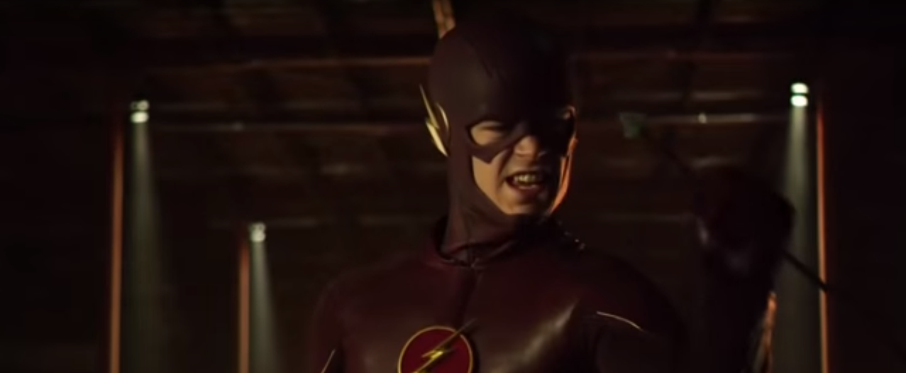
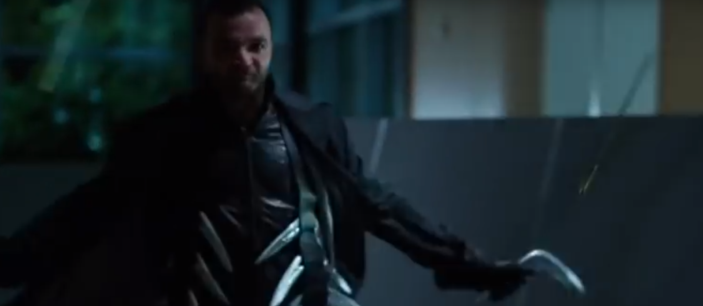

Michal Paszkiewicz
ten reasons why arrow sucks
Disclaimer: I've watched all of Arrow back to back. I think you will enjoy the show a lot more if you leave room between the episodes. This article is my own view and in no way represents the view of my company.
SPOILER WARNING: this article is full of spoilers. I am now largely unsure as to why I wrote it, since people who havn't seen it (apparently) might not want it spoiled for them, so they won't like me warning them about the show by ruining it for them. They'll blame me like Deathstroke blames... whoops, sorry!
The people who have watched Arrow probably either liked it and will massively disagree with me, or are masochists, in which case they won't like me trying to fix things for them and relieving their pain. Everyone in all the other demographics probably stumbled on this article while trawling through my code and are wondering what language this compiles in.
1. Everyone can catch arrows
Why on earth does Oliver keep using a bow? Almost every villain in the TV series has been able to catch arrows, which makes his weapon entirely useless (apart from against all those normal thugs, who could be dealt with just as easily with a stick or just fists).
2. Almost everyone is a ninja
When someone has appeared on the screen for more than a minute, you can be pretty sure they will turn out to be a ninja. If they are recognisable actors, they will definitely be ninjas at some point.
3. Too many people coming back from the dead
More people seem to have come back from the dead than were ever alive in the first place. When you are a few seasons in, you no longer get worried when people stop breathing, get shot or stabbed, since the only thing likely to keep a character dead is if the TV show can't get an actor to come back on the set.
4. People don't seem to understand the definition of "murderer"
Oliver Queen has murdered lots of people. This is a fact. The fact that he no longer murders people doesn't mean that he is no longer a murderer.
Due to this fact, he should turn himself in and suffer the punishment. Until he spends some time in prison for his past crimes, he should stop labelling other people as "murderers" while not putting himself in the same category. He IS a murderer and he has not faced justice for it.
5. People dumping people for stupid reasons
"We can't be together, because I don't want you to get hurt". This sums up this late trend I've seen where society is becoming increasingly terrified of any physical pain, while it has a complete disregards emotional/mental pain. Not only will the breakup definitely hurt the other party, one thing the characters never seem to learn is that being further away from their loved ones means they have less protection and usually end up getting in more trouble. Yet they repeat this over and over again.
Oh wait. Then there's that bit with Felicity. She is already involved in the whole vigilante thing. Being in a relationship won't put her more at risk. Urgh. I give up. Someone should start giving relationship counselling to superheroes. There's a fortune in there.
6. All the lying
Everyone lies. From Oliver to Laurel to Lance to that guy that told me I should watch Arrow. And they're not even good lies. I could do better and I'm a programmer - I don't even talk to people regularly!
7. All the stupid excuses for lying
"I lied to protect you!" - Of course you did. This is the same reason everyone ever lies. The difference between most people and the characters in Arrow, is that we all stopped doing that the first time we collapsed in a spiral of lies. In Arrow, the moment that most of the truth starts coming out, you will see new lies pop up and the reason for hiding them is never different, just coming from a different angle. Can someone please just grow up?
8. Noone learns from their mistakes
All the lying and dumping and expecting villains not to catch arrows. It repeats every half a season.
9. Everyone being ridiculously undecided
Almost twice an episode you will see Oliver (or anyone else) switch between "I've changed" and "I haven't changed". I would argue that someone who switches between these viewpoints HAS at least changed in the short term, so they should just accept they've changed in general.
10. Everyone can disappear in the blink of an eye
Including: boomerang guy who does it right in the middle of a top secret military operations building surrounded by multiple superheroes and super-soldiers; and that weird drug dealer who was in the middle of the city wearing a bright orange jump suit. I wish that stupid island could disappear like this, because it seems the whole world is based around it and I don't want my world based on a prison island.
published: Tue Aug 30 2016